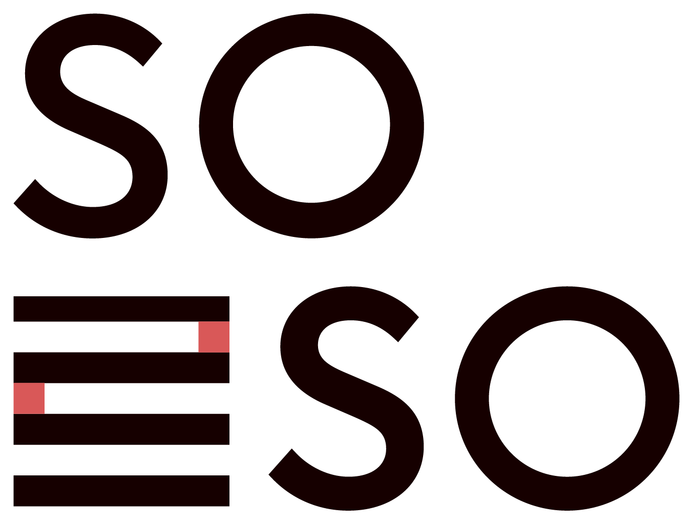

COFFEE-O-TIME
지금은, 소르-소 타임!
Member Login
로그인
아직 계정이 없으신가요?
계정 만들고, 나만의 커피 취향 분석하러 가기
Create Account
계정을 만들고
취향 분석을 시작해요
가입 후 바로 나만의 커피 취향 분석으로 이어져요.
계정 만들고 분석하러 가기
Step 01 / 06
지금 어떤 커피가
끌리시나요?
답변은 취향 기반 추천 원두에 반영돼요.
{{ opt.label }}
{{ opt.sub }}
다음
Step 02 / 06
어떤 밸런스의
잔을 좋아하세요?
답변은 취향 기반 추천 원두에 반영돼요.
{{ opt.label }}
{{ opt.sub }}
다음
Step 03 / 06
주로 어떻게
즐겨 드세요?
답변은 취향 기반 추천 원두에 반영돼요.
{{ opt.label }}
{{ opt.en }}
다음
Step 04 / 06
커피를 주로
언제 즐기세요?
답변은 취향 기반 추천 원두에 반영돼요.
{{ opt.label }}
{{ opt.sub }}
다음
Step 05 / 06
어떤 향을
좋아하세요?
아로마 휠 기준으로 여러 개 골라도 좋아요. 취향 기반 추천 원두에 반영돼요.
{{ opt.label }}
잘 모르겠어요
다음
Step 06 / 06
주로 어떤 도구로
추출하세요?
Brew 화면의 기본 레시피에 반영돼요.
{{ opt.label }}
{{ opt.en }}
취향 분석 결과 보기
Taste Analysis
{{ report.code }}
{{ report.title }}
{{ report.summary }}
{{ ax.left }}
{{ ax.right }}
좋아할 향미
{{ fam.ko }}
이 취향에 맞는 원두
{{ report.recBean.name }}
{{ report.recBean.origin }}
{{ report.recBean.notes }}
›
분석 결과 저장하기
Saved · 저장된 분석 결과
{{ savedReport.code }}
{{ savedReport.title }}
{{ savedReport.summary }}
{{ ax.left }}
{{ ax.right }}
좋아할 향미
{{ fam.ko }}
취향 분석 테스트를 업데이트 하시겠어요?
다시 할게요
홈으로
9:41
‹
뒤로
{{ overlayTitle }}
7월 22일 화요일 · 안녕하세요, {{ memberName }}님
투데이
지
{{ st.value }}
{{ st.unit }}
{{ st.label }}
향미 탐험
전체 보기 ›
{{ ringToday.pct }}
%
커버리지
{{ f.ko }}
{{ f.pct }}
오늘의 추천
{{ p.name }}
{{ p.sub }}
›
다음 원두 추천 받기
최근 기록을 바탕으로 골라드려요
›
멤버 전용 드롭
이번 주 한정 로스팅
{{ dropBean.name }}
{{ dropBean.dropCount }}개 남음 · 멤버 우선 예약
확인하기
Discover
SORSO가 고른 원두, 원산지와 향미까지 둘러보세요
{{ t.label }}
World Map
원두가 오는 곳
{{ o.count }}
{{ o.country }}
핀을 눌러 원산지별 원두를 둘러보세요. 색은 대표 향미 계열이에요.
Aroma Map
향미 계열 지도
{{ f.en }}
{{ f.ko }}
{{ f.val }}%
{{ sec.eyebrow }}
{{ sec.label }}
{{ bean.name }}
{{ bean.priceLabel }}원
{{ bean.origin }}
{{ chip.label }}
{{ m.label }}
{{ m.value }}
Brewing Lab
나의 브루잉 랩
원두를 고르면 딱 맞는 레시피 값이 세팅돼요
{{ b.name }}
{{ b.remaining }} 남음
{{ brewLab.name }}
{{ brewLab.origin }}
{{ brewLab.remainLabel }}
Recommended Temp
{{ brewLab.temp }}
°C
{{ r.k }}
{{ r.v }}
추출 시작
커뮤니티
멤버들이 나누는 레시피와 전문가의 추출법을 둘러보세요
+
나만의 레시피 공유하기
{{ t.label }}
{{ r.avatar }}
{{ r.ko }}
{{ r.kindLabel }}
{{ r.name }} · {{ r.handle }}
{{ r.likeCount }}
{{ r.summary }}
Photo
필요한 재료
{{ ing.k }}
{{ ing.v }}
키워드
#{{ tag.label }}
{{ r.detailLabel }}
{{ r.detailArrow }}
RATIO
{{ r.ratio }}
LEVEL
{{ r.level }}
{{ st.n }}
{{ st.t }}
{{ r.primaryLabel }}
{{ r.scrapLabel }}
Master Methods
{{ r.ko }}
{{ r.level }}
{{ r.author }} · {{ r.org }}
{{ r.desc }}
·
{{ st.t }}
RATIO
{{ r.ratio }}
TIME
{{ r.time }}
♥ {{ r.likes }}
이 레시피로 추출하기
{{ r.scrapLabel }}
SORSO 공식 레시피
{{ r.initial }}
{{ r.name }}
{{ r.origin }}
METHOD
{{ r.method }}
{{ r.temp }} · {{ r.ratio }}
›
{{ r.ko }}
{{ r.name }} · {{ r.srcLabel }} · {{ r.kindLabel }}
스크랩 해제
{{ r.sub }}
{{ r.linesLabel }}
·
{{ ln.t }}
{{ r.primaryLabel }}
필요한 원두 구매하기
음성으로 레시피 읽어주기
아직 스크랩한 레시피가 없어요.
커뮤니티·전문가 레시피에서 스크랩을 눌러
이곳에 모아보세요.
검색 결과가 없어요.
다른 키워드로 찾아보세요.
검색 결과가 없어요.
다른 키워드로 찾아보세요.
선반
내 카페 선반에 진열된 원두
+ 원두 추가
{{ t.label }}
원두 추가 방법
갤러리에서 가져오기
사진 속 원두 정보를 자동으로 채워요
›
촬영하기
원두 봉투를 찍으면 정보를 읽어요
›
수동으로 입력하기
직접 하나씩 적어요
›
Personal Coffee 등록
AUTO
사진에서 읽은 정보를 채웠어요. 잘못됐거나 빈 항목은 직접 수정해주세요.
{{ sl.label }}
{{ sl.value }}
등록하기
+
원두 추가
{{ p.enName }}
{{ p.koName }}
{{ p.roast }}
{{ p.remainingLabel }}
{{ p.sourceLabel }}
{{ p.statusLabel }}
{{ g.koName }}
{{ g.enName }}
{{ g.ovrLabel }}
Recipe Book · 레시피 북
{{ r.k }}
{{ r.v }}
My Record · 나의 기록 ({{ g.brewCount }}회)
{{ g.myRecipe }}
{{ ts.label }}
{{ ts.v }}
“{{ g.myNote }}”
원두 상세
이 레시피로 추출
나의 브루잉 실험실
원두마다 조금씩 바꿔가며 내 입맛을 찾은 기록
실험실 입장하기
원두와 조절 포인트를 골라 새 실험을 시작해요
›
{{ st.value }}
{{ st.unit }}
{{ st.label }}
{{ g.koName }}
{{ g.enName }} · {{ g.method }}
실험 {{ g.count }}회
Best Recipe · 나의 최적값
{{ g.bestRecipe }}
이 값으로 추출
{{ g.toggleLabel }}
{{ g.toggleArrow }}
{{ e.seqLabel }} · {{ e.date }}
{{ e.ovrLabel }}
{{ e.arrow }}
{{ e.changed }}
{{ e.detailLabel }}
{{ e.detailArrow }}
{{ ro.k }}
{{ ro.v }}
TIP
{{ e.tip }}
{{ ts.label }}
{{ ts.v }}
마셨을 때 어때나요?
{{ f.label }}
나의 노트
수정
취소
저장
{{ e.note }}
아직 남긴 노트가 없어요. 수정을 눌러 기록해보세요.
검색 결과가 없어요.
다른 원두 이름으로 찾아보세요.
나만의 레시피 공유
실험실 레시피를 불러오거나 새로 작성해 커뮤니티에 공유해요
실험실에서 불러오기 (선택)
{{ b.label }}
사진 업로드
완성된 음료 사진을 추가해보세요
갤러리에서 가져오기
촬영하기
음료 이름
음료 설명
카테고리 태그
{{ c.label }}
키워드 태그
필요한 재료
추출 가이드
음료 레시피
커뮤니티에 공유하기
새 실험 시작
원두와 조절 포인트를 고르면 딱 맞는 브루잉 팁을 드려요
STEP 1 · 어떤 원두로 실험할까요?
{{ b.label }}
STEP 2 · 기준 레시피
{{ entryBeanName }}
{{ entryBaseLabel }}
{{ r.k }}
{{ r.v }}
STEP 3 · 무엇을 조절해볼까요?
{{ a.label }}
{{ a.sub }}
TIP
{{ entryTip }}
기준 레시피에서 조절하기
기준값으로 되돌리기
{{ c.label }}
{{ c.delta }}
{{ c.minusText }}
{{ c.value }}
{{ c.plusText }}
이대로 추출해보기
추출 없이 기록만 저장
이미지 준비 중 · 임시 데이터
{{ pd.origin }} · {{ pd.process }}
{{ pd.name }}
{{ m.label }}
{{ m.value }}
Aroma Wheel · 향미 계열
{{ w.ko }}
이 원두의 향미 계열 · {{ pd.noteFamKos }}
Balance Web · 커핑 밸런스
{{ lb.label }}
{{ lb.val }}
아로마 · 산미 · 단맛 · 바디 · 쓴맛 5가지 지표를 7점 기준으로 나타냈어요.
Expert Flavor Note
{{ pd.flavorNote }}
Balance Note
{{ pd.balanceNote }}
온도에 따른 맛의 변화
{{ t.label }}
{{ activeTempNote }}
나의 취향과 맞는 이유
{{ pd.whyForYou }}
Official Brew Recipe
{{ row.k }}
{{ row.v }}
{{ pd.priceLabel }}원
{{ pd.size }}g · 로스팅 {{ pd.roastDate }} · 다음 로스팅 {{ pd.nextRoast }}
구매하기
←
Live Brew
{{ connectionLabel }}
기기 데이터 시뮬레이션
{{ manualToggleLabel }}
{{ brewStepLabel }}
{{ timerElapsed }}
/ {{ timerTotal }}
Brew Complete
It's
coffee-o-time!
{{ mk.label }}
Water Poured
{{ cup.currentLabel }}
/ {{ cup.targetLabel }}
이번 단계 목표 {{ cup.stepTargetLabel }}
Water Temp
{{ tempLabel }}
°C
지금 해야 할 일
{{ currentAction }}
한 잔 완성
오늘의 한 잔이 완성됐어요.
맛을 기록해볼까요?
{{ timerButtonLabel }}
{{ nextStepLabel }}
Taste 기록 남기러 가기
Quick Taste
{{ qtBeanName }} · 10초면 충분해요
{{ sl.label }}
{{ sl.value }}
{{ sl.left }}
{{ sl.right }}
전체 인상
{{ o.label }}
{{ expandLabel }}
{{ sl.label }}
{{ sl.value }}
Flavor Note
+ 사진 추가
기록 저장
Expert vs Me
{{ evmBeanName }}
나의 기록
전문가 노트
비슷하게 느낀 부분
· {{ line }}
다르게 발견한 부분
· {{ line }}
다음 잔에서 찾아볼 맛
· {{ line }}
다음 추천 보기
Recommendation
{{ recIntro }}
취향과 가까운 선택
{{ recClose.name }}
{{ recClose.reason }}
자세히 보기
구매하기
새로운 맛에 도전
{{ recStretch.name }}
{{ recStretch.reason }}
자세히 보기
구매하기
Today로 돌아가기
{{ nav.glyph }}
{{ nav.label }}
{{ toastMsg }}